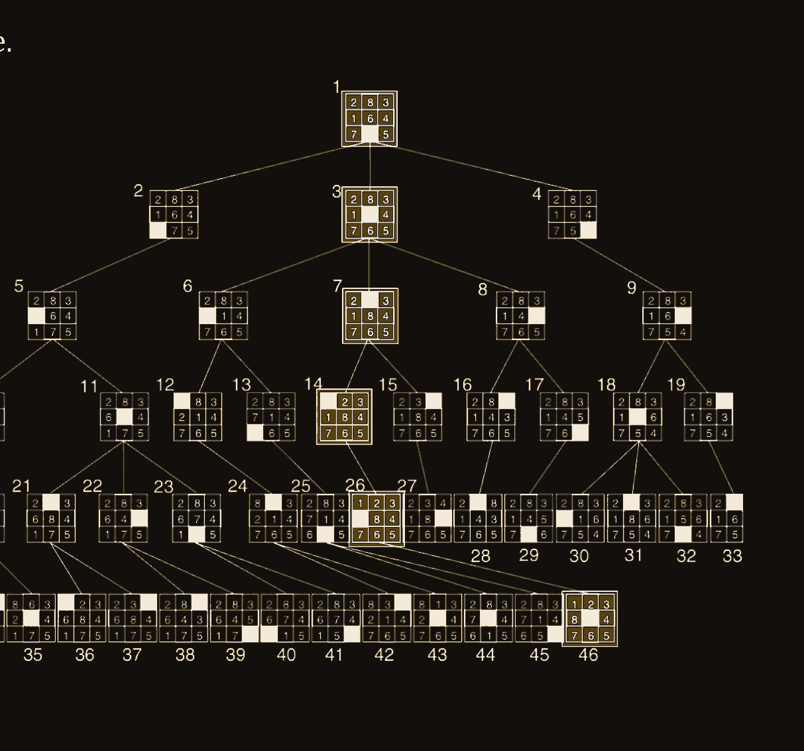
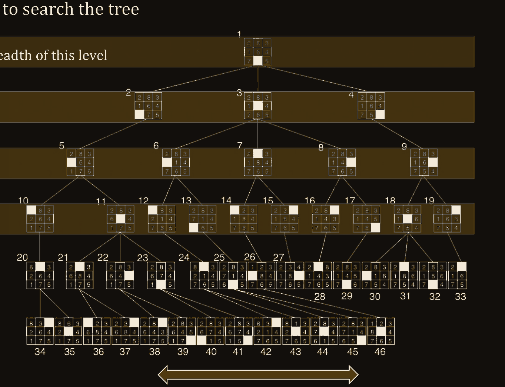
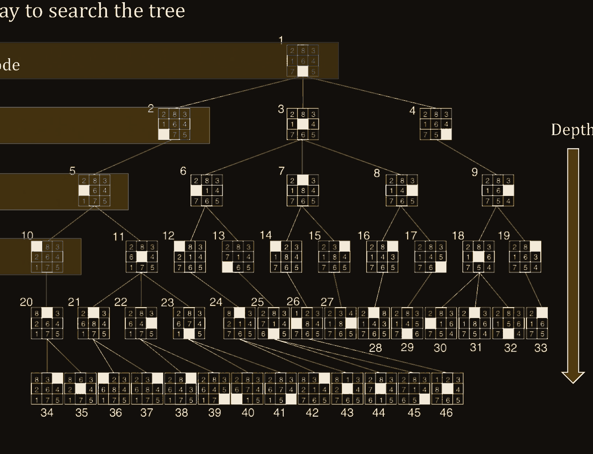
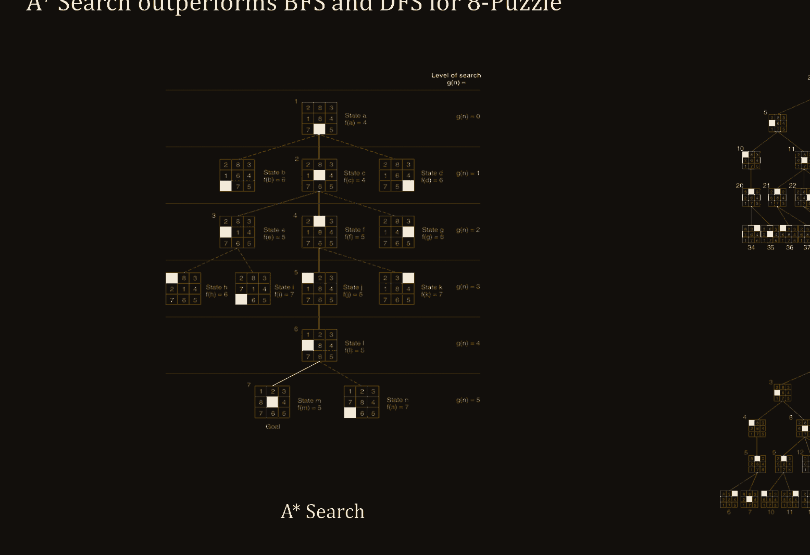

Mohammed A. AlamMSAI 348: Intro to AINorthwestern University
Intelligence, for this course
Treat intelligence as mapping a situation onto a decision, a prediction, or an action — by search, by reasoning, or by learning.
The operation can be computation. It can be reasoning. Or it can be search. Search is the one we can actually watch.
Before the operation
Words. Vectors of those words. Pixels. Digitized sound. You cannot search what you have not made into a state.
A toy world, then the explosion
Suppose the computer is to learn fish, and we allow it only these features.
3 × 2 × 2 × 2 × 2 × 2 = 96 instances
Then the tables stack
Then 2(296) hypotheses — more than the atoms in the universe. Six features of a fish.
The point of the fish
If a handful of features does this, the space a mind actually works in is not enumerable. Intelligence cannot be “try everything.” That is why this lecture exists.
A space small enough to draw
The 8-puzzle. Slide a tile into the blank. Each board is a state. Each legal slide is an action. A solution is a path.
Moves become a tree

One path that works: 1–3–7–14–26–46. The rest of the tree is still there, thickening underneath.
Every tree search
Look at a node. If it is not the goal, generate its children. That is the whole family of algorithms. They disagree only about which node you check next.
Two different objects
A state is a configuration of the world. The board. The city. The assignment of features.
A node is bookkeeping in the tree: the state, the parent, the action that got you here, the path cost, the depth.
The expand function fills in a new node — from a map, or from a successor function. The same state can appear as many nodes. That fact will matter.
The only interesting data structure
Also called the frontier: every node slated to be checked. You pop one. You test it. If it is not the goal, you push its children. Which nodes wait there — and in what order — is the algorithm.
Order is everything
BFS · FIFO
People at the polls. The first one in is the first one out. You finish a level before you start the next.
DFS · LIFO
Plates. The last one on is the first one off. You dive until you cannot, then you come back.
Breadth-first · on the tree

Finish a generation before you start the next. Node 16, when we use it as a goal, sits on level 3 — BFS will meet everyone shallower first.
BFS · walk the fringe
currentfringe16 is the goal
Breadth-first
You spend memory keeping a whole generation in the fringe. You get the shortest path in number of steps.
Depth-first · on the tree

Dive until you cannot. Then back up one and dive again. Same tree as BFS. Opposite handwriting.
DFS · walk the fringe
currentfringe16 is the goal
Depth-first
A stack pops the last child you pushed. If you want to walk left to right, push right to left. Same algorithm. Opposite handwriting.
Why we keep both
| The worry | BFS | DFS |
|---|---|---|
| Space | O(bd+1) | O(bm) |
| Time | O(bd+1) | O(bm) |
| Complete? | Yes | No |
| Optimal? | Yes · shallowest | No |
b branching factord depth of shallowest goalm maximum depth
The method has to fit the space
A tree of every legal slide. You want a path, not a tour of the tree. Depth-first will do — you do not need every sibling.
Degrees of connection, level by level. You want the shortest path to a person. Breadth-first: the first time you meet them, that is the shortest.
Plenty of memory does not make BFS free. Scarce memory does not make DFS wise. Wait one more idea.
What we actually want
Iterative deepening
Run depth-first with a ceiling L. Then raise L: 0, 1, 2, … until the shallowest goal. Same visit order as BFS. Same memory as DFS.
Depth-limited search alone is incomplete if the goal sits past L. Iterative deepening keeps lifting the ceiling.
It re-searches the top of the tree every time. That sounds wasteful. The last layer costs more than all the others stacked. Waste that is asymptotically free. Time and space both O(bd).
Uninformed search · the scorecard
| BFS | DFS | DLS | IDS | |
|---|---|---|---|---|
| Space | O(bd+1) | O(bm) | O(bL) | O(bd) |
| Time | O(bd+1) | O(bm) | O(bL) | O(bd) |
| Complete? | Yes | No | If L is enough | Yes |
| Optimal? | Yes | No | No | Yes |
They look only at the tree, not at the states — except to ask: is this the goal? Have I been here?
Informed search
Two kinds of instruction
An algorithm is a set of unambiguous steps. It generally stops. It usually aims at optimality, completeness, accuracy, precision.
A heuristic is a rule of thumb. It trades those italics for speed. Good enough, soon enough.
Two guesses for the 8-puzzle
Tiles out of place. Count them. Ignore the blank.
5Sum of grid-steps each tile still has to walk.
6Best-first
Give every node a score f(n). Keep the fringe as a priority queue: most desirable first.
f(n) = h(n)Expand whoever looks closest to the goal. Ignore what you already spent.
f(n) = g(n) + h(n)Cost so far, plus a guess at the rest. Do not expand paths already expensive.
BFS used a queue. DFS used a stack. Greedy and A* use a priority queue — sorted by that score.
The one line to keep
f(n) = g(n) + h(n)
g is the road behind you. h is a rumor about the road ahead. f is whether this path still deserves to be walked.
Romania, because everyone does
Sibiu to Bucharest you can do in your head. Three routes. One of them is shorter.
Oradea to Neamt you cannot. That is why the map exists in every textbook — and why A* uses straight-line distance as h. A crow never overestimates a road.
A* · on a map, step by step
Same 8-puzzle, three handwritings

A* walks a spine. BFS inflates a generation. DFS dives the wrong well. That is the whole argument for a heuristic.
Trees are a special case
All trees are graphs. Not all graphs are trees. A tree is a DAG in which every node has one parent.
Tree search walks a graph as if it were a tree. You may meet the same state twice. Graph search keeps a closed list so you do not. The closed list costs memory. The duplicate visits cost time. Pick your bill.
When the rumor is legal
h(n) ≤ h*(n). Never overestimate the true remaining cost. Optimistic. Straight-line distance is the textbook case. If h is admissible, A* returns an optimal path.
h(n) ≤ c(n, p) + h(p). The triangle inequality on the way down. f never gets cheaper along a path. Then tree search and graph search both behave.
Most heuristics you will write are both admissible and consistent. If you somehow write an inconsistent one, only tree search is still safe. Graph search may skip the optimal path.
A last geometry
Games. An adversary. Strategic thinking — and the old question, sitting there again: is that intelligence?
Minimax
Max wants the value of the position high. Min wants it low. Both assume the other will play perfectly. You unroll the tree to a terminal, write +1 / 0 / −1, and back the numbers up.
The name is not Max and Min glued together. Minimax means: choose the move that minimizes the maximum loss the opponent can inflict.
You do not owe the whole tree a look
Cut the tree by depth and you get the horizon effect: a good move sitting one ply past where you stopped looking.
α–β pruning throws away branches that cannot change the decision. Once Max holds a 3, any Min line that has already dipped to 2 can stop. The 15 never gets read.
What we actually learned
Each method has a space it is honest in, and a space where it lies — with memory, with time, with a path that is legal and still wrong. The work is matching the method to the map.